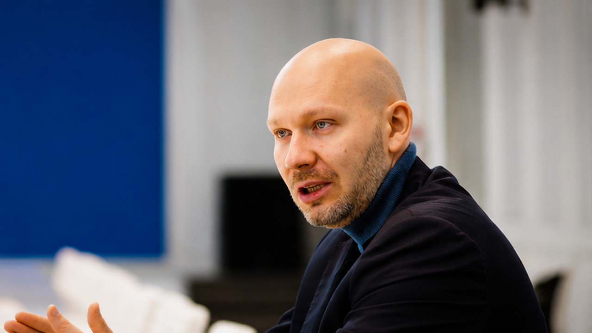

Константин Михайлик
Заместитель министра строительства и ЖКХ РФ
Читать главу →

01О герое
Спецвыпуск: заместитель министра строительства и ЖКХ РФ — о городах-полигонах, где технологии честно проверяют до масштабирования, о переходе в цифру как «броске в воду» и о двух типах руководителей.
02Ключевые тезисы
- Иннополис важен как управляемая среда, где можно тестировать технологии до масштабирования.
- Умный город — это не набор гаджетов, а система реальных сценариев, рисков, ошибок и обратной связи.
- Цифровизация строительства неизбежно ведёт к вопросу кибербезопасности физической инфраструктуры.
- Переход в цифру требует пересборки себя, команды и языка управления.
- Сильное наставничество даёт право на ошибку, но не снимает ответственность.
03Возьми с собой
Что применить
Не оценивай среду по первому впечатлению: иногда за пустыми улицами скрывается будущая лаборатория страны.
Тестируй технологию там, где можно честно увидеть ошибки, а не только красиво показать результат.
Когда входишь в новую сферу, не бойся признать нехватку компетенции: это начало обучения, а не слабость.
Цитаты
Иннополис — это пространство, где люди квалифицированные могут быстро оценить риски или возможности технологий.
— Константин Михайлик
Для меня факт перехода в цифру — это искренне бросок в воду, чтобы научиться плавать.
— Константин Михайлик
Роботизация и беспилотие будут приходить в повседневную жизнь.
— Константин Михайлик